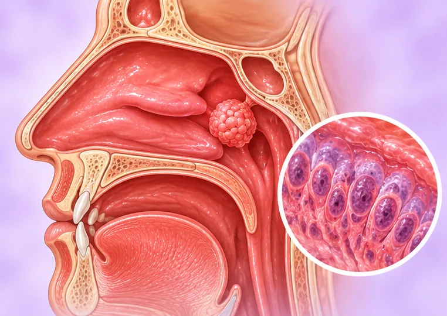
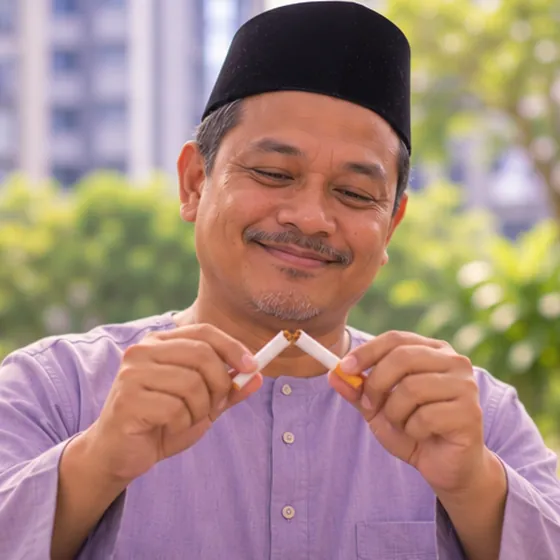

Tumor batang tenggorok (trakea)
Pertumbuhan tidak normal dalam batang tenggorok, tiub yang membawa udara ke paru-paru
Apa itu
Tumor ialah pertumbuhan sel yang tidak normal. Dalam trakea, ia boleh menyempitkan saluran udara dan mengubah pernafasan atau batuk. Ia jarang berlaku.
- Trakea di dada dan leher
- Orang dewasa, selalunya warga emas
- Batuk atau pernafasan berbunyi
- Jumpa doktor
- Doktor keluarga dahulu; pakar dada atau paru-paru, pakar onkologi
- Biasa pada
- Orang dewasa; puncanya selalunya tidak diketahui, merokok ialah risiko
- Berjangkit
- Tidak
- Perjalanan
- Bergantung pada jenis dan saiz; pasukan perubatan boleh menerangkan
Tanda biasa
Nafas berbunyi mengiMengi Suara serakSuara serak (disfonia) 
Letih sepanjang masaKeletihan
Tanda-tanda lain
- Batuk yang tidak hilang
- Rasa sesak nafas, walaupun ketika berehat
Mengapa ia berlaku

Punca belum diketahui sepenuhnyaIdiopatik MerokokPenggunaan tembakau
Punca lain
- Sesetengah tumor bermula di trakea; yang lain merebak dari kawasan berdekatan
- Sesetengah pertumbuhan bukan kanser; hanya ujian dapat memastikan
Jumpa doktor dahulu jika
- Sukar bernafas, bibir membiru atau bunyi nafas bertambah kuat: hubungi 999
- Batuk berdarah: ke hospital segera
- Batuk atau suara serak yang berlarutan lebih daripada beberapa minggu
- Sukar menelan, atau berat badan turun tanpa sebab
- "Asma" yang tidak bertambah baik dengan rawatan biasa
Jika mana-mana berkenaan, sila jumpa doktor sebelum sesi.
Halaman ini ialah maklumat am. Sila terus mengambil ubat biasa anda dan terus berjumpa doktor.
Teruskan mengambil ubat biasa anda dan terus berjumpa doktor. Sesi kami ialah sokongan lembut dan tidak menggantikan rawatan perubatan.
Menjaga diri
Ikut pelan pasukan rawatanSusulan pakar 
Berhenti merokokBerhenti merokok 
Berehat secukupnyaRehat
Lebih banyak cara menjaga diri
- Tanya pasukan anda tentang kesakitan, makanan dan sokongan emosi
Beritahu ahli terapi anda
- Kanser atau rawatan kanser
- Perentak jantung atau implan logam
- Kehamilan
- Ubat pencair darah
Ahli terapi anda akan menyemaknya bersama anda sebelum bermula.
Soalan dan jawapan
Apakah Tumor batang tenggorok (trakea)?
Pertumbuhan tidak normal dalam batang tenggorok, tiub yang membawa udara ke paru-paru. Tumor ialah pertumbuhan sel yang tidak normal. Dalam trakea, ia boleh menyempitkan saluran udara dan mengubah pernafasan atau batuk. Ia jarang berlaku.
Apakah tanda biasa Tumor batang tenggorok (trakea)?
Nafas berbunyi mengi · Suara serak · Letih sepanjang masa
Mengapa Tumor batang tenggorok (trakea) berlaku?
Punca belum diketahui sepenuhnya · Merokok
Bagaimana menjaga diri dengan Tumor batang tenggorok (trakea)?
Ikut pelan pasukan rawatan · Berhenti merokok · Berehat secukupnya
Bolehkah sesi AI Body Master membantu Tumor batang tenggorok (trakea)?
Sesi ialah sokongan meridian tanpa jarum yang lembut untuk kesejahteraan anda. Ia tidak merawat atau menyembuhkan Tumor batang tenggorok (trakea) dan tidak menggantikan ubat atau doktor anda. Beritahu ahli terapi anda sebelum sesi bermula.
Keadaan berkaitan
Rujukan: General information based on public health sources such as Mayo Clinic, NHS, Cleveland Clinic and NCBI StatPearls.
Halaman dikemas kini: 2026-11-01